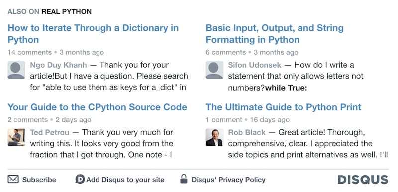

博客折腾记(七) - Gitalk Plus
源代码/数据集已上传到 Github - f379d87767787979507a0e4a20da64ba
背景
今天看后台数据，访客数没有变化，但总的PV增加了 20% ，因为昨晚添加了一个小功能。
静态博客有局限性，很多数据没有办法很好地呈现。比如
- 主页文章列表，每一篇文章的阅读量和评论量。
- 根据文章阅读量/评论量作推荐。
- 展示最近的评论。
而其实这些信息恰恰是独立博客最需要的。如果文章旁边的推荐链接显示了阅读量，我很可能会被阅读量最大的那一篇文章吸引，并点进去。如果发现有意思，可能会进入更多的页面。如果每天访问的童鞋有30%因为推荐链接显示了阅读量这么做了，人均 PV 自然就能上一个台阶了。
说到评论，国内缺少像 disqus 这样被广泛使用的第三方社交化评论系统，国外很多知名的平台，CNN、NBC、Fox News、Engadget、Time 等都使用了 disqus，使用 disqus 评论已经成为了一种用户习惯。一些知名的编程网站，例如 realpython、geeksforgeeks 也使用了 disqus。国内的多说倒闭后，再也找不到类似的评论系统了。很多站长选择用 disqus，一些站长选择自建评论系统，用户需要输入邮箱、昵称等信息，站长也得维护一整套服务。类似于 WordPress 这样的博客还好，本来就需要有后端服务器，而对于静态博客而言，就过于折腾了。
我选择了基于 Github Issues 的 Gitalk。一段时间下来，至今评论量没有超过100条。要是我是一个读者，使用 Github 登录评论，也有点怪怪的感觉，评论量少也就释然了。但是 disqus 的有个功能，ALSO ON <BLOG> 我印象很深，评论内容远比文章标题或是阅读量要吸引人。我平时看别人博客的时候，很容易因为看到一条有意思的评论，就点进去了。Gitalk 没有这样的功能，我就想着实现一个。

数据从哪来
如果没有额外的服务器作为数据源，那么只能部署的时候放一份静态的 JSON 格式的文本来存储评论数据了。展示的文章评论没有那么高的时效性，数据每次新写博客，部署的时候顺便重新生成就 OK 了。前端通过fetch，请求 JSON 文本，然后使用 JavaScript 作动态渲染，一切就都搞定了。
于是，我写了一个 NodeJS 的脚本comment.js，用来生成这份 JSON 格式的评论数据。
- 从
/repos/<repo>/issues/comments获取最新的 100 条评论内容。 - 根据评论关联的 issue 从
/repos/<repo>/issues/<num>获取文章的 URL 、评论数等信息。 - 去重，相同文章的评论只保留最新的一条，避免推荐相同的文章。
- 将数据写入
comments.json。
最终的 JSON 文本如下：
1 | [{ |
然后我在博客模板中添加了如下代码。
1 | <div id="gitalk-related"></div> |
使用 JavaScript 的 fetch 函数请求comments.json的数据，随机选取 4 条，动态地生成 HTML，插入到 gitalk-related中。这样每篇文章推荐的评论都不一样了。效果的话，相信读到这里你已经看到了~
生成 comments.json 和动态渲染 HTML 的代码都放到 Github。CSS 色彩基本是按照 Gitalk 来写的，这份代码对所有的使用 Github Issues 作为评论系统的童鞋都是可用的，也是静态博客完善评论系统的一个思路吧。
上一篇 « Go语言动手写Web框架 - Gee第二天 上下文Context 下一篇 » Go语言动手写Web框架 - Gee第三天 前缀树路由Router